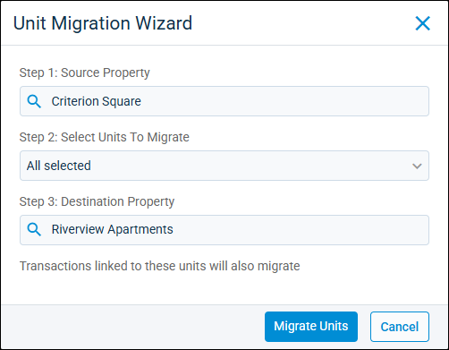

Source: https://rmxhelp.rentmanager.com/Topics/Express/Other/Units-Migration-Wizard.htm
Unit Migration Wizard
The Unit Migration Wizard allows you to transfer a unit from one property to another, keeping its occupancy information, history/notes, service issues, and transactions intact. For example, if you decide to consolidate a single property in Rent Manager where you previously used two or more, you can migrate those units to the primary property and seamlessly continue collecting payments and maintaining historical records.
Warning
A unit can be migrated to a different property only if the other property does not have a unit of the same name. You need to rename units at one of the properties before you can use this tool.
Related Privileges
| Group | Privilege | Column |
|---|---|---|
| Properties/Units | Units | View, Edit |
| Unit Migration Wizard | Enabled |
For more information, refer to Control User Access.
To perform a unit migration, do the following:
-
Go to
 arrow_forward
arrow_forward  Administration, then go to .
Administration, then go to .
More Information
Only information related to the properties to which you have access displays. Your access to properties can be managed from your user account or on the property's details page. For more information, refer to Limit Access to a Property.
-
In the Step 1: Source Property field, select the property whose units are being migrated from the drop-down list.
-
In the Step 2: Select Units To Migrate field, choose the unit(s) from the selected source property that are being migrated.
-
In the Step 3: Destination Property field, select the property to receive the unit(s).
-
Click Migrate Units.
The selected unit(s) is transferred from the source property to the destination property.